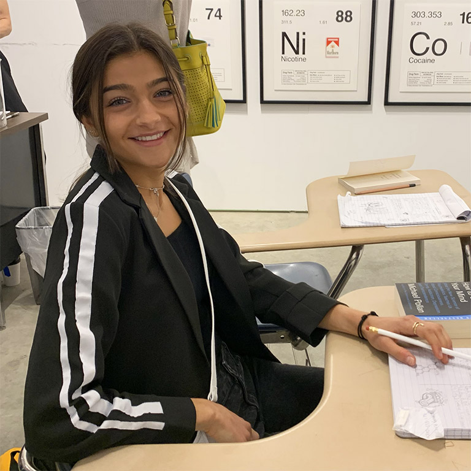
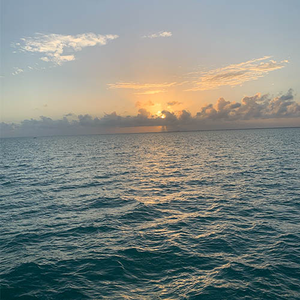
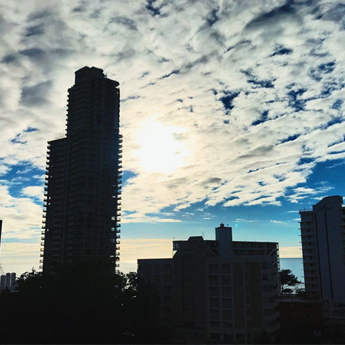

About Me
Hi! My name is Lauren Greene I am currently a sophomore at the University of Miami majoring in creative advertising and minoring in entrepreneurship. I love anything creative. Design, writing, music, movement, you name it.
When I was 5 years old I had my first lemonade stand, but instead of selling lemonade I sold a signature drink... seltzer, lemonade and blue gatorade. While looking back on it now it was probably sort of gross but that was the start of my creative thinking and the want to share my thinking with other people.
My Creativity
When I was 10 I was playing golf with my dad in the 90 degree weather and got very frustrated that I couldn’t put my hair in a bun (only a low ponytail that slid through that annoying little opening at the bottom of the hat. So what did I do? I went home took out scissors, a needle and a thread and reconstructed my first “scrunchie hat” I put a hole in the too of a normal baseball cap so my hair would he able to be put up without struggle.
When I got to middle school I started experimenting with music on my own. I watched youtube videos and learned how to play the ukulele. I became fascinated with songwriting and that became my new creative path.


The Future
I wrote birthday songs, poems, and songs about my life. I kept coming up with fun creative songs and other entrepreneurial ideas until I got to college where I took on a new task. I realized that there weren’t enough healthy options for food on campus and all of the snacks that were available were not sustainable for a busy college student. I started working with the on campus launchpad program and created a banana based ice cream truck called “Banana Whips” idea that could be implemented on campus. Now I do not know what the future will hold but I know that I can take my creative juices and let them flow in any direction that life will take me.